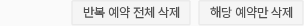
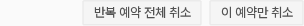
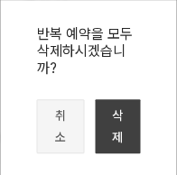
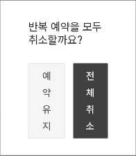
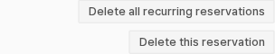
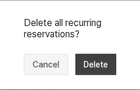
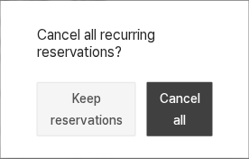
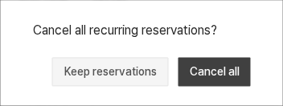
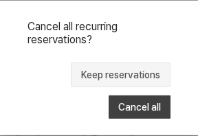

예약 용어와 좁은 확인창
RC-Q1·2 · 판단 2개 · 제안은 앱 미적용먼저, 적용한 내용을 확인해 줘
DS-037 주황 버튼 호버 실제 적용에서 기본 주황을 유지한 포인터 반응을 볼 수 있어. DS-005 확인창 문구 실제 적용에서는 행동과 대상에 맞춘 안내를 확인할 수 있어.
1. 이용자가 하는 일은 예약 취소 · RC-Q1
현재: 예약의 버튼·확인창·완료 안내에 ‘삭제’를 쓴다. 추천: 이용자의 행동을 ‘예약 취소’로 표현하고, 단건과 반복 예약의 범위를 계속 구분한다.
‘취소’가 확인창을 닫는다는 뜻과 겹치지 않도록 반대 버튼은 예약 유지로 표시한다. 영어는 단건 Keep reservation, 반복 Keep reservations로 구분한다. 예약을 그대로 두는 기존 동작은 같다.
API·delete 함수·권한·반복 처리 범위는 유지한다. 취소 이력이나 복구 기능을 추가한다는 뜻은 아니다.
한국어 · 행동부터 완료까지 같은 용어
아래는 문구만 바꾼 비교다. 390px에서 확인창 폭이195px로 좁아 기존 ‘취소’·‘삭제’도 글자별로 갈라졌다. 제안 문구도 같은 문제를 겪는다. 폭과 버튼 배치를 조정한 결과는 RC-Q2 견본에서 별도로 보여준다.
예약 상세 · 현재

예약 상세 · 제안

확인창 · 현재

확인창 · 문구만 제안, 폭 문제 남음

| 위치 | 현재 | 제안 |
|---|---|---|
| 단건 행동 | 해당 예약만 삭제 | 이 예약만 취소 |
| 반복 행동 | 반복 예약 전체 삭제 | 반복 예약 전체 취소 |
| 단건 확인 | 해당 예약을 삭제하시겠습니까? | 이 예약만 취소할까요? |
| 반복 확인 | 반복 예약을 모두 삭제하시겠습니까? | 반복 예약을 모두 취소할까요? |
| 반대 버튼 | 취소 | 예약 유지 |
| 단건 / 반복 실행 | 삭제 / 삭제 | 예약 취소 / 전체 취소 |
| 완료 안내 | 예약을 삭제했습니다. | 예약을 취소했습니다. |
English · 같은 행동과 범위
예약 상세 · 현재

예약 상세 · 제안
확인창 · 현재

확인창 · 문구만 제안, 폭 문제 남음

| 위치 | 현재 | 제안 |
|---|---|---|
| 단건 행동 | Delete this reservation | Cancel this reservation |
| 반복 행동 | Delete all recurring reservations | Cancel all recurring reservations |
| 단건 확인 | Delete this reservation? | Cancel only this reservation? |
| 반복 확인 | Delete all recurring reservations? | Cancel all recurring reservations? |
| 단건 반대 버튼 | Cancel | Keep reservation |
| 반복 반대 버튼 | Cancel | Keep reservations |
| 단건 / 반복 실행 | Delete / Delete | Cancel reservation / Cancel all |
| 완료 안내 | 예약을 삭제했습니다. | Reservation canceled. |
2. 글자 대신 버튼 단위로 줄바꿈 · RC-Q2
실제 문제: 작은 확인창에서 ‘취/소’, ‘삭/제’처럼 버튼 글자가 갈라진다. 문구만 바꾸면 ‘예약 유지’도 세로로 갈라진다. 기존값을 유지하려던 모달에 이번 실제 배치 문제를 해결하는 변경을 제안한다.
추천: 640px 미만에서는 공용 확인창을 90vw로 하고 기존 최대512px를 유지한다. 버튼 글자는 줄바꿈하지 않고, 한 줄에 들어가지 않으면 버튼 전체가 다음 줄로 간다. 640px 이상은 기존 내용 기반 폭을 유지한다.
한국어 · 390px 배치 제안
한국어 · 320px 배치 제안
English · 390px 배치 제안

English · 320px 배치 제안

위 4장은 제안 문구에 폭·버튼 배치를 함께 대입한 별도 견본이다. 색·글자 크기·좌우40px 패딩·모서리·버튼 순서는 유지한다. 버튼이 다음 줄로 가면 창 높이는 늘 수 있다.
공용 AlertDialog의 변경이므로 다른 확인창도 영향을 받는다. 승인 후 예약 한·영320/390px·데스크톱과 다른 확인창 대표의 폭·긴 문구·버튼 배치를 확인한다. 내용 모달과 이미지 안내창의 크기를 통일하는 제안은 아니다.
용어와 배치의 적용 범위
반복 예약의 처리 범위와 현재 요청 경로는 바꾸지 않는다. 버튼·확인창·성공 후 완료 안내를 함께 맞추며, Sonner 라이브러리 내부는 수정하지 않고 예약 화면의 기존 호출부 문자열만 동기화하는 제안이다.
RC-Q1은 예약 문구 묶음, RC-Q2는 작은 공용 확인창의 폭과 버튼 배치다. 둘 다 색·글자 크기·패딩·모서리와 요청 동작은 유지한다.
함께 정할 두 가지
- RC-Q1: 예약의 버튼·확인창·완료 안내를 ‘예약 취소’ 용어 묶음으로 적용할까?
- RC-Q2: 작은 공용 확인창은90vw로 하고, 글자 대신 버튼 단위로 줄바꿈할까?
둘 다 적용을 추천해. 첫째는 행동을 구분하고, 둘째는 실제로 확인한 글자별 줄바꿈을 해결해. 예: “1 적용, 2 적용”.
두 제안 모두 아직 앱에는 적용하지 않았다. 현재 소스·이유·적용 경계.